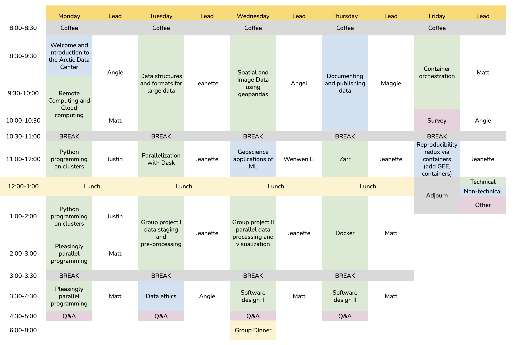

Scalable and Computationally Reproducible Approaches to Arctic Research
Preface
About
This 5-day in-person workshop will provide researchers with an introduction to advanced topics in computationally reproducible research in python, including software and techniques for working with very large datasets. This includes working in cloud computing environments, docker containers, and parallel processing using tools like parsl and dask. The workshop will also cover concrete methods for documenting and uploading data to the Arctic Data Center, advanced approaches to tracking data provenance, responsible research and data management practices including data sovereignty and the CARE principles, and ethical concerns with data-intensive modeling and analysis.

Schedule

Code of Conduct
Please note that by participating in this activity you agree to abide by the NCEAS Code of Conduct.
Setting Up
In this course, we will be using Python (3.12.12) as our primary language, and VS Code as our IDE. Below are instructions on how to get VS Code set up to work for the course. If you are already a regular Python user, you may already have another IDE set up. We strongly encourage you to set up VS Code with us, because we will use your local VS Code instance to write and execute code on one of the NCEAS servers.
Download VS Code and Remote - SSH Extension
First, download VS Code if you do not already have it installed.
You’ll also need to download the Remote - SSH extension.
Log in to the server
To connect to the server using VS Code follow these steps, from the VS Code window:
- open the command pallette (Cmd + Shift + P)
- enter “Remote SSH: Connect to Host”
- select “Add New SSH Host”
- enter the ssh command to connect to the host as if in a terminal (
ssh username@included-crab.nceas.ucsb.edu)- Note: you will only need to do this step once
- select the SSH config file to update with the name of the host. You should select the one in your user directory (eg:
/Users/jclark/.ssh/config) - click “Connect” in the popup in the lower right hand corner
- Note: If the dialog box does not appear, reopen the command palette (Cmd + Shift + P), type in “Remote-SSH: Connect to Host…”, choose included-crab.nceas.ucsb.edu from the options of configured SSH hosts, then enter your password into the dialog box that appears
- enter your password in the dialog box that pops up
When you are connected, you will see in the lower left hand corner of the window a green bar that says “SSH: included-crab.nceas.ucsb.edu.”
Install extensions on the server
After connecting to the server, in the extensions pane (View > Extensions) search for, and install, the following extensions:
- Python
- Jupyter
- Jupyter KeymapNote that these extensions will be installed on the server, and not locally.
Create a (free) Google Earth Engine (GEE) account
In order to code along during the Google Earth Engine lesson (Ch 15) on Thursday, you’ll need to sign up for an account at https://signup.earthengine.google.com. Once submitted, you’ll receive an email with some helpful links and a message that it may take a few days for your account to be up and running. Please be sure to do this a few days ahead of needing to use GEE.
GEE authentication (more on that in Lesson 15) uses Cloud Projects. Some organizations control who can create Cloud Projects, which may prevent you from completing the authentication process. To circumvent authentication issues, we recommend creating your GEE account using a non-organizational account (e.g. a personal email account). Check out GEE’s authentication troubleshooting recommendations if you continue to run into issues.
Test your local setup (Optional)
We are going to be working on the server exclusively, but if you are interested in setting up VS Code to work for you locally with Python, you can follow these instructions. This local setup section summarizes the official VS Code tutorial. For more detailed instructions and screenshots, see the source material. This step is 100% optional, if you already have an IDE set up to work locally that you like, or already have VS code set up to work locally, you are welcome to skip this.
Locally (not connected to the server), check to make sure you have Python installed if you aren’t sure you do. File > New Window will open up a new VS Code window locally.
To check your python, from the terminal run:
python3 --versionIf you get an error, it means you need to install Python. Here are instructions for getting installed, depending on your operating system. Note: There are many ways to install and manage your Python installations, and advantages and drawbacks to each. If you are unsure about how to proceed, feel free to reach out to the instructor team for guidance.
- Windows: Download and run an installer from Python.org.
- Mac: Install using homebrew. If you don’t have homebrew installed, follow the instructions from their webpage.
brew install python3
After you run your install, make sure you check that the install is on your system PATH by running python3 --version again.
Next, install the Python extension for VS Code.
Open a terminal window in VS Code from the Terminal drop down in the main window. Run the following commands to initialize a project workspace in a directory called training. This example will show you how to do this locally. Later, we will show you how to set it up on the remote server with only one additional step.
mkdir training
cd training
code .Next, select the Python interpreter for the project. Open the Command Palette using Command + Shift + P (Control + Shift + P for windows). The Command Palette is a handy tool in VS Code that allows you to quickly find commands to VS Code, like editor commands, file edit and open commands, settings, etc. In the Command Palette, type “Python: Select Interpreter.” Push return to select the command, and then select the interpreter you want to use (your Python 3.X installation).
To make sure you can write and execute code in your project, create a Hello World test file.
- From the File Explorer toolbar, or using the terminal, create a file called
hello.py - Add some test code to the file, and save
msg = "Hello World"
print(msg)- Execute the script using either the Play button in the upper-right hand side of your window, or by running
python3 hello.pyin the terminal.- For more ways to run code in VS Code, see the tutorial
Finally, to test Jupyter, download the Jupyter extension. You’ll also need to install ipykernel. From the terminal, run pip install ipykernel.
You can create a test Jupyter Notebook document from the command pallete by typing “Create: New Jupyter Notebook” and selecting the command. This will open up a code editor pane with a notebook that you can test.
About this book
These written materials reflect the continuous development of learning materials at the Arctic Data Center and NCEAS to support individuals to understand, adopt, and apply ethical open science practices. In bringing these materials together we recognize that many individuals have contributed to their development. The primary authors are listed alphabetically in the citation below, with additional contributors recognized for their role in developing previous iterations of these or similar materials.
This work is licensed under a Creative Commons Attribution 4.0 International License.
Citation: S. Jeanette Clark, Matthew B. Jones, Samantha Csik, Carmen Galaz García, Bryce Mecum, Natasha Haycock-Chavez, Daphne Virlar-Knight, Juliet Cohen, Anna Liljedahl. 2023. Scalable and Computationally Reproducible Approaches to Arctic Research. Arctic Data Center. doi:10.18739/A2QF8JM2V
Additional contributors: Amber E. Budden, Noor Johnson, Robyn Thiessen-Bock
This is a Quarto book. To learn more about Quarto books visit https://quarto.org/docs/books.